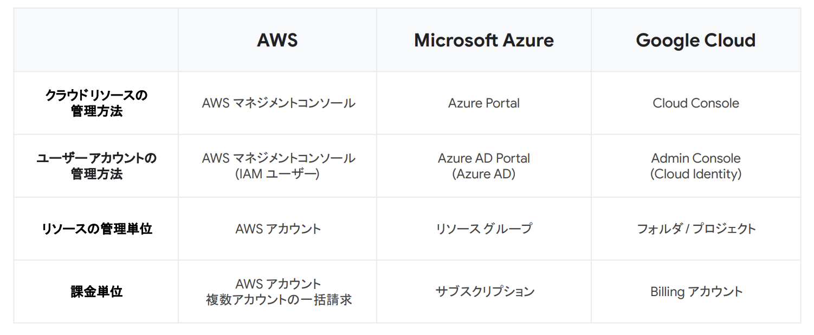
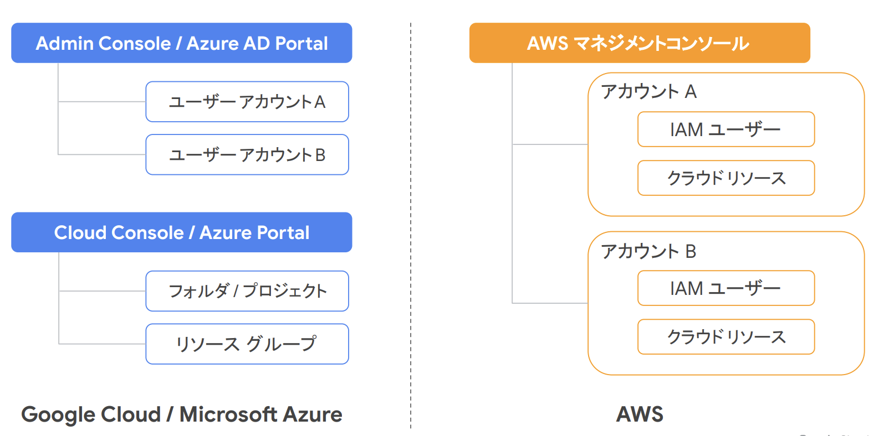
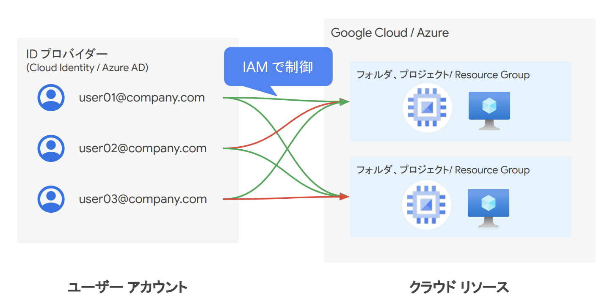

GCPについて¶
GCPは、Googleが提供するクラウドコンピューティングプラットフォーム。 GCPを使うことで、Google社内で使われているものと同じテクノロジーやサービスを利用することができる。
GCPはAWS同様柔軟性や拡張性、高速なインフラをクラウドから利用できる特徴があるとともに、データ分析やAIという分野において強みがある。
ドキュメント¶
勉強中ドキュメント¶
インフラ¶
他のクラウドとの比較¶
リソース・ユーザーの管理¶
GPCユーザーやリソースの管理がAWSとは異なる。
AdminConsoleでユーザーを作成。CloudConsoleでプロジェクト内のリソースを操作する形。 AWSではアカウント単位でリソース境界があるが、GCPではアカウントに紐造りソースはなく、プロジェクト単位で分けられている。
 Google Cloud でクラウド二刀流エンジニアを目指すための「早わかり集中技術講座」
 Google Cloud でクラウド二刀流エンジニアを目指すための「早わかり集中技術講座」
独立したユーザーが、参画するPJのリソースを操作している。  Google Cloud でクラウド二刀流エンジニアを目指すための「早わかり集中技術講座」
GCPにおけるリソースの階層構造。
 まずは知っておくべき IAM の基礎と最新の便利機能
まずは知っておくべき IAM の基礎と最新の便利機能